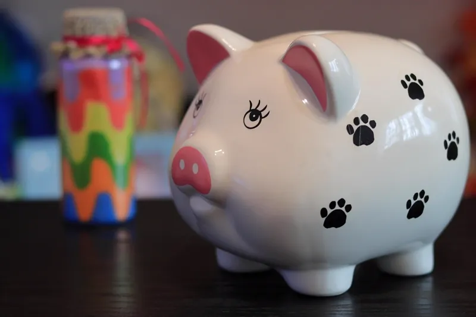

Saque-aniversário x saque-rescisão: a diferença
No saque-rescisão (modalidade padrão), você só mexe no FGTS quando é demitido sem justa causa, sacando o saldo total mais a multa de 40%. No saque-aniversário, você recebe uma parte do saldo todo ano, no mês do seu aniversário — mas em troca, abre mão de sacar o saldo total em caso de demissão, recebendo só a multa rescisória.
A carência de 24 meses
Quem quer voltar pro saque-rescisão pode pedir isso direto pelo app FGTS, mas a mudança não é imediata: existe uma carência de 24 meses a partir da data do pedido. Durante todo esse período, você continua sob as regras do saque-aniversário, mesmo já tendo solicitado a volta.
⚠️ Isso pega muita gente de surpresa: a pessoa pede a mudança achando que já está protegida, mas se for demitida dentro desses 24 meses, ainda recebe só a multa de 40% — não o saldo completo.
O que acontece se eu for demitido durante a carência
Uma MP (Medida Provisória 1.331/2025) liberou o saque integral do FGTS pra quem estava no saque-aniversário e foi demitido entre janeiro de 2020 e dezembro de 2025 — mas essa exceção não vale mais para demissões a partir de janeiro de 2026. A trava de 24 meses voltou a valer normalmente: quem é demitido durante a carência recebe só a multa rescisória, com o restante do saldo seguindo retido pros saques anuais.
Quando vale a pena voltar
- Se seu emprego é instável — ter acesso ao saldo total em caso de demissão pode ser mais importante que o saque anual
- Se você não usa o saque-aniversário como fonte de renda — se o valor anual não faz falta no seu orçamento, pode não valer manter
- Se você não pretende ser demitido tão cedo — os 24 meses de carência pesam menos se você tem estabilidade no emprego atual
Antes de decidir, vale lembrar que quem está no saque-aniversário e precisa de dinheiro no meio do caminho pode antecipar os próximos saques, inclusive sem consulta ao SPC/Serasa — outra forma de ter fôlego financeiro sem abrir mão da modalidade.
Precisa de dinheiro sem esperar os 24 meses de carência?
A FelizCred trabalha com antecipação do saque-aniversário do FGTS, sem consulta ao SPC/Serasa.
🧮 Simular antecipação FGTS 💬 Falar no WhatsAppPerguntas frequentes
FGTS saque-aniversário voltar pro saque-rescisão
É possível, mas existe uma carência de 24 meses a partir da solicitação — durante esse período você continua nas regras do saque-aniversário, mesmo já tendo pedido a mudança.
Migrar saque-aniversário
O pedido é feito direto pelo app FGTS. A mudança só passa a valer de fato depois dos 24 meses de carência — não é uma troca imediata.
Carência FGTS 24 meses
É o prazo mínimo que você precisa esperar depois de pedir a volta pro saque-rescisão. Se for demitido sem justa causa durante esse período, ainda saca só a multa de 40%, não o saldo total.